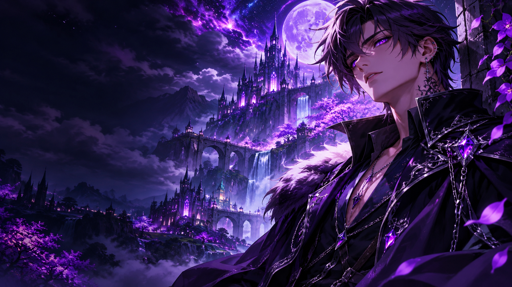

Survival · Multiple endings
🧛 Vampire Survival
Explore Blackthorn Manor, manage your health and supplies, and survive the blood moon.
Two playable adventures. Make your choices, solve mysteries, survive the night. Your progress stays on this device.
Explore Blackthorn Manor, manage your health and supplies, and survive the blood moon.

Find clues, collect keys, crack a four-digit lock and escape the abandoned estate.
Explore a 3D abandoned castle and chapel, climb stairs, open doors, collect weapons and survive five levels of vampires.
Choose from vampire, mafia, werewolf, witch and hunter racers. Race three circuits with keyboard or phone controls.